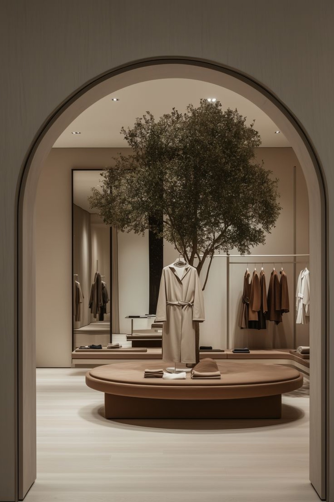
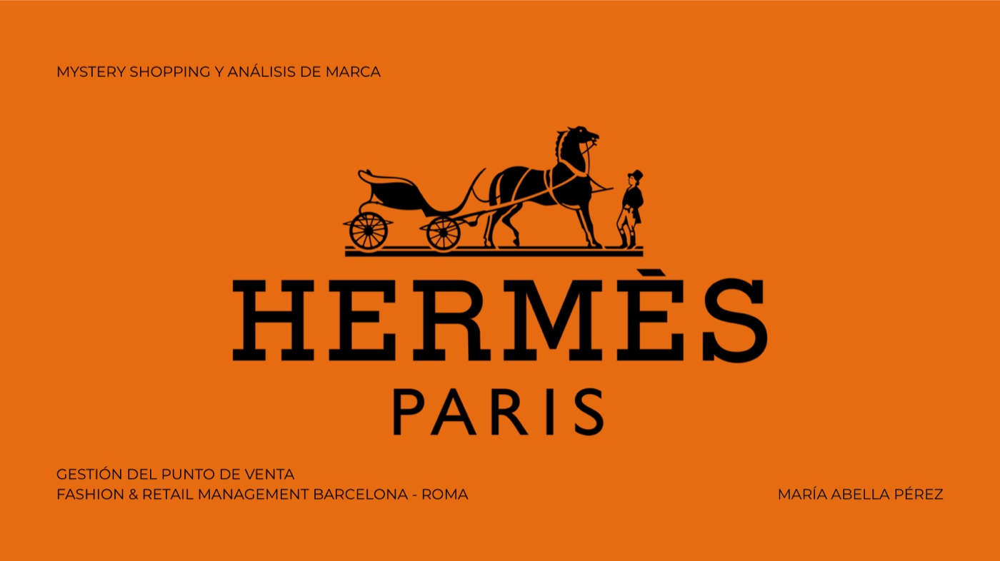
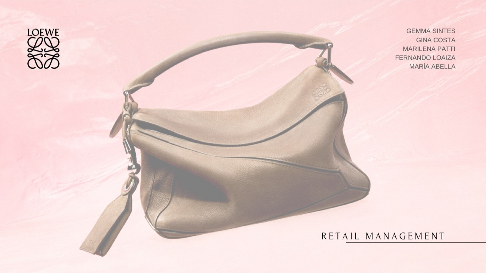

Scalpers · KPIs personales
Rendimiento en tienda
Conversión, ticket medio y récord semanal por encima del estándar retail.
Fashion Retail · Barcelona
Store Manager · Product & Retail Strategy
Construyo experiencias de tienda donde el producto, el dato y la creatividad se encuentran.

— una visión integral del retail, del producto al punto de venta.
Sobre mí
Profesional de Fashion Retail con más de tres años de experiencia en primera línea de marcas nacionales e internacionales. Actualmente Store Manager en Scalpers (ECI Diagonal). Gestiono tres departamentos con KPI y productos independientes, y un equipo de cinco personas en uno de los corners de mayor tráfico de la marca en Cataluña.
Mi formación en EAE Business School, IED Barcelona e IDEM me da una visión integral del negocio: producto, supply chain, demand planning, visual merchandising y comunicación de marca.
Mi experiencia está en el punto de venta, pero mi objetivo es dar el salto hacia la conceptualización y estrategia en HQ. Disfruto del equilibrio entre creatividad y análisis, y lo que más valoro es poder llevar la estrategia de marca al terreno, traduciéndola en experiencias y resultados concretos en tienda.
Manifesto
El retail de lujo está dejando de venderse a sí mismo como un lugar donde se compran productos, para convertirse en un lugar donde se viven experiencias. En 2026 la tienda física se está transformando en un destino inmersivo, donde cada punto de contacto busca generar una conexión más profunda con el cliente, combinando elementos de hospitalidad y entretenimiento dentro del propio espacio comercial.
Esta transformación convive con un contexto de mercado más exigente. La industria del lujo está entrando en una fase de estabilización y selectividad, donde el crecimiento ya no depende tanto del volumen como del valor percibido y la relevancia cultural de la marca. Por eso la experiencia presencial — citas personalizadas, showrooms privados, pop-ups — se ha convertido en un diferenciador real frente a marcas más accesibles, y no en un añadido opcional. Desde la tienda, esto se traduce en una responsabilidad muy concreta: cada estándar de marca que ejecutamos a diario —desde el escaparate hasta el trato en el probador— es, en realidad, una pieza de la estrategia global de la compañía, aunque a veces se viva como una tarea operativa más.
También creo que la tecnología y el dato van a seguir ganando peso, pero no como sustituto de las personas, sino como apoyo. Herramientas como la realidad aumentada o el video-shopping personalizado ya permiten ofrecer un servicio de alta atención dentro de un entorno digital, y esto solo funciona si detrás hay equipos de tienda capaces de interpretar esos datos y trasladarlos a decisiones reales sobre el terreno. Mi experiencia coordinando KPIs de venta, conversión y ticket medio en el día a día me ha dado esa mirada híbrida: sé leer un dato, pero también sé lo que significa en términos de comportamiento real de cliente.
Por eso entiendo el retail de lujo no como dos mundos separados —el de la central que diseña la estrategia y el de la tienda que la ejecuta— sino como un mismo ecosistema. El reto de los próximos años no es solo crear experiencias memorables, sino conseguir que esa visión de marca llegue intacta hasta el último punto de contacto con el cliente. Y ese es, precisamente, el espacio en el que quiero seguir creciendo: en el puente entre la estrategia de experiencia que se diseña en central y la realidad que se vive cada día en el punto de venta.
— María Abella
Resultados que importan
Scalpers · KPIs personales
Conversión, ticket medio y récord semanal por encima del estándar retail.
+50%
facturación semanal en tienda TTGG tras rediseño de visual merchandising y rotación de producto.
~20K€
récord de ventas semanales junto a un equipo de 6 personas en Scalpers Diagonal.
10
perfiles de creadoras de contenido gestionados, con audiencias de 82K hasta 1,2M.
Paréntesis fuera del retail
Entre junio 2022 y enero 2023 trabajé en remoto como Influencer Marketing Assistant para una freelance, gestionando una cartera de 10 creadoras de contenido en moda, belleza y lifestyle. Los datos del gráfico que sigue corresponden a esa etapa: una experiencia que sumó visión 360º de marca a mi recorrido retail.
Influencer Marketing · Audiencias gestionadas
10 perfiles en moda, belleza y lifestyle. Top: @aliciarev (1,2M TikTok · 34,9M views/mes).
Trabajos seleccionados
Análisis, auditorías y dossiers estratégicos desarrollados durante el Máster en Fashion & Retail Management de EAE Business School (Barcelona–Rome).

Auditoría de la boutique Hermès de Paseo de Gracia (Barcelona) para evaluar el alineamiento entre los valores de marca y la experiencia real en punto de venta.
Mi rol: proyecto individual — trabajo de campo, redacción del dossier y propuesta creativa.
Descargar dossier
Auditoría 360° de la flagship de LOEWE en Casa Lleó i Morera (Passeig de Gràcia), analizando cómo el punto de venta opera como extensión cultural de la marca.
Mi rol: proyecto en equipo de 5 personas. Foco personal en el bloque de ambiente, atmósfera y dimensión sensorial.
Descargar dossierEstrategia de expansión internacional para la marca colombiana de swimwear premium en el mercado estadounidense, materializada en un pop-up experiencial en El Silencio Ibiza.
Mi rol: proyecto en equipo de 4 personas (María Abella, Ana Gómez, Pau Medina, Karina Weiss).
Descargar dossierFormación
2025 — actualidad
EAE Business School · Barcelona
Modelos de negocio retail, omnicanalidad, supply chain, demand planning, expansión internacional.
2019 — 2022
IED Barcelona
Consumer behavior, branding, posicionamiento y planes de marketing orientados a resultados.
2018 — 2019
IDEM · Madrid
Dirección creativa, storytelling de moda, moodboards y dossiers.
2017 — 2018
IDEM · Madrid
Visual merchandising estratégico, colorimetría y asesoría de imagen.
2016 — 2017
Rigor, atención al detalle y trabajo en equipo multicultural.
Dejé la carrera para dedicarme a lo que verdaderamente me apasiona: la moda.
Hablemos
Abierta a oportunidades en HQ de fashion retail, producto, visual merchandising y dirección de tienda.